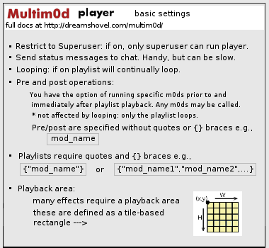

multimod_player.lua |
|
|---|---|
|
multimod_player v3.0 oct 7 2009 @jme (NOTE: "m3p" --> multimod multi-player) Multim0d is a script sequencer that plays compatible MP Behavior Tool scripts sequentially from a playlist, with or without looping. It includes an easy-to-use API and an ever-growing number of compatible BT scripts.  Properties section |
|
|
Metaplace Lua included script state variables via properties that could be hidden, exposed or persisted. Here there are "constant" properties as well as user-config properties. Vars deemed contstant-by-convention are indicated by ALL CAPS |
Define Properties()
multimod_present = true
multimod_inited = false
multimod_running = false
effect_index = 1
playlist = {}
forced_post_op = false
M3P_DEFAULT_POST_OP = ""
M3P_DEFAULT_PRE_OP = ""
multimod_req_su = 1
PersistProperty('multimod_req_su')
ExposeProperty('multimod_req_su', 'Restrict to superuser(s) only.', 'checkbox')
|
|
m3p_chat_status = 1
PersistProperty('m3p_chat_status')
ExposeProperty('m3p_chat_status','Send status messages to chat','checkbox')
|
|
m3p_playlist_loop = 0
PersistProperty('m3p_playlist_loop')
ExposeProperty('m3p_playlist_loop', 'Loop playlist:', 'checkbox')
m3p_pre_op = M3P_DEFAULT_PRE_OP
PersistProperty('m3p_pre_op')
ExposeProperty('m3p_pre_op', 'play this m0d before playlist (e.g., for setup)')
m3p_post_op = M3P_DEFAULT_POST_OP
PersistProperty('m3p_post_op')
ExposeProperty('m3p_post_op', 'play this m0d after playlist (e.g., for cleanup)')
m3p_user_playlist = {"mod_random"}
PersistRuntimeProperty('m3p_user_playlist')
ExposeProperty('m3p_user_playlist', 'playlist ')
|
|
Standard required tool version, name and description fields |
bt_behavior = 1
bt_desc = 'Multim0d Player v3'
bt_name = 'multimod_player'
end
|
|
Init |
function multimod_init(owner)
owner.multimod_inited = true
end
|
|
from_csv This is just the CSV reference method from the Lua Standard algorithms, tweaked to use any separator character. scan for ending tokens, collect fields in table t. |
function from_csv(s)
local token = '+'
s = s ..token
local t = {}
local fieldstart = 1
repeat -- next field is quoted? (start with `"'?)
if string.find(s, '^"', fieldstart) then
local a, c
local i = fieldstart
repeat -- find closing quote
a, i, c = string.find(s, '"("?)', i+1)
until c ~= '"' -- quote not followed by quote?
if not i then error('unmatched "') end
local f = string.sub(s, fieldstart+1, i-1)
table.insert(t, (string.gsub(f, '""', '"')))
fieldstart = string.find(s, token, i) + 1
else -- unquoted; find next comma
local nexti = string.find(s, token, fieldstart)
table.insert(t, string.sub(s, fieldstart, nexti-1))
fieldstart = nexti + 1
end
until fieldstart > string.len(s)
return t
end
|
|
Handle the next item in the playlist This is the core playback function. On call it will tick to the next item in playlist. Loop-over or finish (depending on config) when end of playlist is reached.
|
Trigger m3p_next()
local ename = ""
local finished = false
if (self.effect_index == 0) then
self.effect_index = 1
ename = self.m3p_pre_op
if (ename ~= "") then
Debug("mod call-> [" ..ename .."]")
local xp = from_csv(ename)
local ecall = xp[1] .."_startup"
table.remove(xp,1)
Debug('pre-op Running: ' ..ecall)
SendTo(self,ecall,0,xp)
else -- tell self to call me back with another attempt. index has been ticked...
Debug("m3p_next: no pre-op: NEXT!")
SendTo(self,'multimod_cmd_done',0)
end
Debug("- m3p_next: 0-run done -")
return
end
if ((self.effect_index ) == (#self.playlist + 1)) then
if (self.forced_post_op == true) then
self.forced_post_op = false
self.multimod_running = true
ename = self.m3p_post_op
self.effect_index = self.effect_index + 1 -- tick index for next call
else
if (self.m3p_playlist_loop==1) then
if (#self.playlist > 0) then
ename = self.playlist[1]
self.effect_index = 2
else
ename = self.m3p_post_op
self.effect_index = 2
end
Debug("playlist end: looping...")
else
ename = self.m3p_post_op
self.effect_index = self.effect_index + 1
Debug("- playlist end: No loop: prep-post_op")
end
end
elseif ((self.effect_index) >= (#self.playlist +2)) then -- completed post op. All done now: Also catch over-limit indicies.
self.multimod_running = false
ename = ""
Debug("Post_op done. Prep-stop")
else -- not at post_op, not at end: set effect and tick index for next call.
ename = self.playlist[self.effect_index]
Debug("m3p_next: mod index:" ..self.effect_index)
self.effect_index = self.effect_index + 1
end
if (ename ~= "") then
Debug("mod call-> [" ..ename .."]")
local xp = from_csv(ename)
local ecall = xp[1] .."_startup"
table.remove(xp,1)
SendTo(self,ecall,0,xp)
else
Debug("m3p_next: all done!")
SendTo(self,'multimod_cmd_done',0)
end
end
|
|
cmd_done Called by effects when they complete. If the playlist is still running, call for next effect. |
Trigger multimod_cmd_done()
if (self.multimod_running ==true) then
SendTo(self,'m3p_next',30)
else
Debug('- multimod_cmd_done -')
end
end
|
|
Load Playlist Loads the user-defined list of effects modules from the Behavior Tool properties. Clears out the old playlist first. |
function loadUserPlaylist(owner)
table.clear(owner.playlist)
local i
local user_effect
for i,user_effect in ipairs(owner.m3p_user_playlist) do
table.insert(owner.playlist,user_effect)
end
end
|
|
Validations Assure that target coords conform to valid value space. TBD |
function validateParams(owner)
end
|
|
Main event/entry point Prep for run
Those pre_op and post_op gsub calls are a patch for the BT bug where a space char is added to empty-string fields either on logout or restart. Since space chars are not allowed in m0d sigs..., this is a problem. Playback Playlists can contain pre and post-roll operations. These are just regular multiM0d effects modules.
|
Trigger use(user)
local validated = false
if (self.multimod_req_su==1) then
if (IsSuperuser(user)==1) then
validated = true
end
else
validated = true
end
if (validated) then
if (self.multimod_inited == false) then
multimod_init(self)
end
self.m3p_pre_op = string.gsub(self.m3p_pre_op, "%s","")
self.m3p_post_op = string.gsub(self.m3p_post_op, "%s","")
if (self.multimod_running == false) then
loadUserPlaylist(self)
for v,eff in ipairs(self.playlist) do
Debug(" item: " ..v ..", " ..eff)
end
Debug("- end playlist -")
end
if (self.multimod_running == false) then
self.multimod_running = true
self.forced_post_op = false
if (self.m3p_chat_status == 1) then
local w = GetWorld()
local cs = w.chat_system
SendTo(cs, 'chat_simple_spatial', 0, self, 'multimod_player ON !')
end
validateParams(self)
self.effect_index = 0
SendTo(self,"m3p_next",0)
else -- inform all attached m0ds and do manual shutdown
self.multimod_running = false
SendTo(self,'mod_shutdown',0)
SendTo(self,'mod_cmd_shutdown',0)
self.effect_index = #self.playlist + 1 -- set playlist pointer to post_op, if any. Force call.
self.forced_post_op = true
Debug('multimod_player: post_op for manual shutdown.')
SendTo(self,'m3p_next',500)
if (self.m3p_chat_status == 1) then
local w = GetWorld()
local cs = w.chat_system
SendTo(cs, 'chat_simple_spatial', 0, self, 'mod_player: shutdown')
end
end
end
end
|